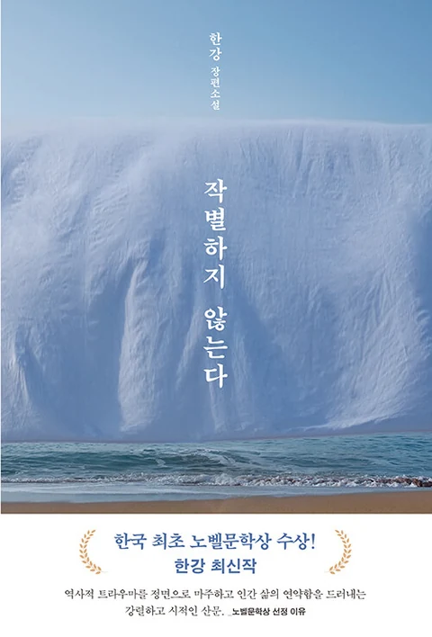

히틀러의 음식을 먹는 여자들
로셀라 포스토리노 · 모임 전, 함께 읽는 중
함께 읽는 시간 · 2026 가을
책 사이읽은 책보다 오래 남는, 나눈 이야기.
같은 책을 읽고도 다르게 남은 문장들.
모임에서 나눈 이야기와 함께 읽은 책을 모았습니다.
로셀라 포스토리노 · 모임 전, 함께 읽는 중
추천 수는 지난 선정작 기록에서 추천자가 확인된 책만 셉니다.
술술 읽히는 소설이라는 첫인상에서 시작해, 흩어진 에피소드가 만나는 순간과 교훈을 전하는 방식까지 이야기했습니다. 책 속 잡화점은 어느새 우리 동네의 가게와 오래된 편지를 떠올리게 했습니다.
결론보다, 서로 다르게 읽은 지점을 남겼습니다.
모임 녹음에서 각자의 이야기를 다시 엮었습니다.
각 글은 9월 15일 토론 녹음의 발언을 요약한 기록입니다. 직접 인용문이나 모임 전 작성한 독서노트는 아닙니다.
2026년 9월 모임의 후보 세 권입니다.
모임 뒤 함께 정리해 공유한 후기를 다시 엮었습니다.
중용과 사라지지 않는 호기심
초반과 달리 뒤로 갈수록 그럴듯하지만 익숙한 이야기가 이어져 조금 아쉬웠다고 이야기했습니다. 저자는 영원히 살 것처럼 느끼는 소년과 그 반대편의 노인 사이에서 중심을 잡는 중용을 말하고 싶었던 것 같다고 읽었습니다.
영생을 다루는 대목에서는 삶에 적절한 제한, 곧 적절한 시련이 필요하다는 메시지를 짚었습니다.
중용을 잘 보여 주는 예로 주역의 수택절을 소개했습니다. 점괘를 자신이 처한 상황에 빗대어 보는 과정이 지금을 더 이성적으로 바라보게 하는 계기가 된다고 했습니다. 소년의 자아와 이별해야 하느냐는 앤님의 질문에는, 이별하려 애쓰기보다 세상에 대한 호기심이 사라지는 것을 경계해야 한다고 답했습니다.
선택과 나를 알아차리는 일
어떤 선택을 할 것인가, 나를 알아차린다는 것에 대한 화자의 이야기에서 40세 교육 때 들었던 마음챙김을 떠올렸습니다. 자신의 삶을 돌아보는 계기가 되었다고 이야기했습니다.
예전에 마음에 담아 두었던 “생각하는 대로 살지 않으면 사는 대로 생각한다”는 명언을 다시 꺼내며, 요즘 사람들은 왜 명언을 찾지 않을까 하는 질문을 던졌습니다. 미래는 결국 우리 자신의 현재가 된다는 문장이 가장 오래 남았다고 했습니다.
유한함과 소년의 자아
글이나 말로 생각을 꺼내고 싶은 마음은 사람이 사회적 존재라는 증거라고 읽었습니다. 자신을 드러내고 다른 사람의 피드백을 받는 일 자체가 개성화의 과정이라고 이야기했습니다.
지금 느끼는 조급함과 도전하고 싶은 마음도 삶과 젊음이 유한하다는 것을 알기 때문이라고 봤습니다.
삶이 끝없이 이어진다면 초반의 나와 후반의 나를 같은 사람이라고 할 수 있을지 질문했습니다. 소년의 자아와는 언제, 어떻게 이별해야 하는지, 아직 그 상태가 편한데도 사회적 나이에 맞춰 이별해야 하는지 함께 조언을 구했습니다.
각 글은 2025년 3월 모임 뒤 함께 정리해 공유한 후기를 요약한 기록입니다. 직접 인용문은 아닙니다.
2025년 3월 모임의 후보 여섯 권입니다.

작별하지 않는다발표와 소감을 차례로 나눈 순서대로 엮었습니다.
과거와 현재가 함께 있는 자리, 지극한 사랑
첫 발표로 모임의 문을 열었습니다. 한강 작가의 인터뷰를 바탕으로 줄거리를 짧게 소개하고, 노벨문학상 누리집에 실린 수상 이유와 작품 소개를 함께 살펴봤습니다.
작가의 작품을 관통하는 주제로 과거와 현재의 공존을 짚고, 그 위에서 작품을 읽어 나가며 ‘지극한 사랑’을 그리는 장면에 주목했습니다.
발표 자료는 AI로 이미지를 다듬고, ChatGPT로 수상 이유를 함께 분석해 보는 방식으로 준비했습니다.
콩죽과 앵무새, 경계에 선 것들
『신화, 인류 최고의 철학』을 참고해, 콩이 여러 문화에서 귀신을 쫓는 주술적 의미를 지닌다는 점을 소개했습니다. 작품 속 콩죽을 산 자와 죽은 자를 잇는 매개로 읽었습니다.
신데렐라와 닮은 구조의 민담이 세계 곳곳에 있고, 콩쥐팥쥐도 계모와 의붓자매의 갈등, 주변의 도움이라는 비슷한 줄거리를 가진다는 이야기로 이어졌습니다. 콩의 상징성과 제비 같은 새의 양면성을 바탕으로 콩죽과 앵무새를 다시 풀어 읽었습니다.
사람의 말을 하지만 사람은 아닌 앵무새, 빛이 있어야만 생기는 그림자처럼 어느 한쪽으로 치우치지 않고 무엇이든 될 수 있는 중의적인 요소들을 짚었습니다. 책을 처음부터 다시 돌아보게 하는 해석이었습니다.
고통을 지나 닿는 공감
초반에 그려지는 까만 나무와 물이 있는 산의 풍경이 제주를 떠올리게 했다며, 가장 압도되었던 구절을 소개하는 것으로 이야기를 시작했습니다.
인선이 일부러 손가락에 피를 내며 신경을 되살리는 과정이, 한국 사회의 상처를 덮어 두지 않고 아프더라도 드러내는 작가의 걸음과 닮았다고 봤습니다. 인물들이 죽음에 가까운 경험을 한 뒤에야 다른 이의 이야기를 들을 수 있게 된다는 점에서, 타인의 고통에 공감하려면 그에 견줄 만한 고통을 지나야 한다는 생각을 나누며 정보라 작가의 『고통에 관하여』를 소개했습니다.
주인공과 인선의 사랑을 통해 타인의 처지를 이해해 가며 자신에게 드리운 죽음의 그림자에서 벗어나는 이야기를, 사랑의 기억으로 강해지는 인간에 대한 이야기로 읽었습니다. 한 권을 읽고 여러 해석을 들으며 미처 보지 못한 부분을 발견할 수 있어 뜻깊은 시간이었다고 했습니다.
발표 뒤 자유롭게 오간 이야기를 남겼습니다.
곽정님은 같은 장면을 눈에 보이는 모습뿐 아니라 냄새와 통증으로 여러 번 다시 말하는 구성이 서늘한 느낌을 준다고 했습니다. 안에서 끓어오르는 감정을 솔직하게 드러내고, 민감한 주제를 용기 있게 다루는 점도 인상적이라고 이야기했습니다.
주인공을 중심으로 곧게 서술하던 『소년이 온다』와 달리, 관찰자의 시점과 혼란스러운 상황 설정이 이 작품만의 특징이라는 이야기가 이어졌습니다.
앤님은 소설 속 눈이 모든 것을 감추고 소리를 지우는 동시에, 삶과 죽음을 주관하는 것처럼 느껴졌다고 했습니다. 곽정님은 여기에 더해 한강 작가의 『흰』을 함께 읽어 볼 책으로 추천했습니다.
2025년 2월 12일 모임 뒤 정리한 기록을 바탕으로 요약했습니다. 직접 인용문은 아닙니다.
이번에 함께 읽을 책은
히틀러의 음식을 먹는 여자들입니다.
토론은 아직 열리지 않았습니다.
모임에서 나눈 생각은 이후에 이곳에 남깁니다.
2026년 10월 모임의 후보 네 권입니다. 이 소개한 네 권 중 『히틀러의 음식을 먹는 여자들』을 함께 읽기로 정했습니다.
마리오님의 개인 발표자료를 따로 읽을 수 있습니다. 모임에서 나눈 토론 기록은 아직 등록되지 않았습니다. 모임 일시는 확인 후 안내합니다.
지난 모임의 토론 기록과 후보를 달별로 모았습니다.
모임마다 함께 검토했던 책과 선정작입니다.
검색어를 바꾸거나 분야를 전체로 선택해 보세요.
토론 추천은 9월 15일 모임 녹음에서 정리했습니다. 기억해 둔 추천 작품의 날짜와 추천자는 추정하지 않았습니다. 후보로만 소개되거나 비교·추억으로 언급된 작품은 이 목록에 포함하지 않습니다. 후보 이력과 별도 추천 이력이 함께 있는 작품은 양쪽에서 볼 수 있습니다. 표지는 출판·서점 자료에서 확인했습니다.